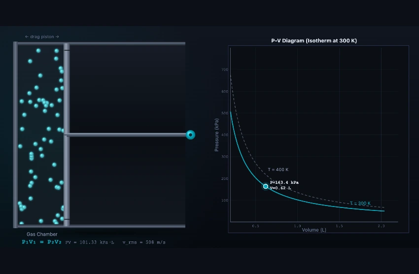

Boyle's Law Simulator
P₁V₁ = P₂V₂ — Isothermal Gas Compression • Simulate • Explore • Practice • Quiz
1 Overview
The SI / Imperial switch in the mode bar reads the gas in US units: pressure in psi, volume in cubic feet, the PV product in psi·ft³ and temperature in °R (Boyle's law needs an absolute scale, so Rankine is the Imperial counterpart of kelvin, not °F). The P–V chart's axis titles, tick numbers and isotherm labels convert with it, as does the on-canvas PV and vrms strip.
The Boyle's Law Simulator is an interactive educational tool that lets you explore the fundamental inverse relationship between gas pressure and volume at constant temperature. Based on the equation P₁V₁ = P₂V₂, this simulator brings the isothermal process to life with animated gas particles bouncing inside a piston-cylinder assembly, a real-time pressure-volume diagram that traces hyperbolic isotherms, and numerical readouts for absolute pressure, volume, the PV product, and temperature.
Whether you are a mechanical engineering student encountering gas laws for the first time, an HVAC technician reviewing thermodynamic fundamentals, or an instructor looking for a visual classroom aid, this tool provides a hands-on way to build intuition about gas compression and expansion without requiring laboratory equipment. The simulator covers Simulate, Explore, Practice, and Quiz modes so you can learn, review, and test your knowledge in one place.
2 Configuring the System
When you first open the simulator, it loads in Simulate mode with default values: air at 300 K occupying 1.00 L at approximately 101.33 kPa. The animated canvas shows gas particles colliding with the piston and cylinder walls, while the P-V diagram on the right plots the current state as a glowing dot on a hyperbolic isotherm.
To begin exploring, drag the Volume (V) slider left to compress the gas and watch pressure rise, or drag it right to expand the gas and see pressure fall. The Temperature slider selects which isotherm you are working on. Boyle's Law governs movement along a single curve — so while you drag the volume slider the temperature stays fixed, exactly as an isothermal process requires. Moving the temperature slider is a separate action that hops you onto a different isotherm, and the curve you came from stays on the chart as a dashed ghost so you can see directly that higher-temperature isotherms lie further from the origin. You can switch gas types using the Gas Type pill tabs (Air, Helium, CO₂) to see how different gases behave under identical conditions: the PV product is identical for all three (an ideal gas does not care which molecule it is made of), but the molecules move at very different speeds, because the root-mean-square speed vrms = √(3RT/M) depends on molar mass. Helium (M = 4 g/mol) moves about 2.7× faster than air; CO₂ (M = 44 g/mol) about 0.8× as fast. Each readout card updates instantly as you adjust sliders, displaying pressure in kPa, volume in litres, the PV product (which should remain constant), and the temperature in Kelvin.
3 Running the Cycle
Simulate mode is the heart of this tool. The left portion of the canvas renders a piston-cylinder assembly filled with animated gas particles. Particle density visually reflects the current volume — compressing the gas packs more particles into less space, making collisions more frequent. Note what the molecules do not do: they never speed up as you compress. Their speed is set by temperature alone, and the process is isothermal, so the only thing that changes is how often they reach a wall. That rising collision rate — not harder-hitting molecules — is the pressure increase Boyle's Law describes. The right portion draws a P-V diagram with isotherms at the current temperature.
Key controls in Simulate mode include the Volume slider (0.2 L to 2.0 L), the Gas Type selector, and the readout cards showing pressure, volume, PV product, temperature, selected gas, and the governing formula P₁V₁ = P₂V₂. Try halving the volume from 1.0 L to 0.5 L and observe that pressure doubles from about 101 kPa to about 203 kPa — a direct demonstration of the inverse relationship. The PV product remains unchanged, confirming that the gas obeys Boyle's Law throughout the isothermal compression.
4 The Underlying Theory
Switch to Explore mode using the mode tabs at the top. Here you can browse curated concept cards organised into four categories: Gas Laws Basics, Boyle's Law, Applications, and Ideal Gas. Each card presents a focused topic with clear explanations, diagrams, and worked examples.
Use the category pill tabs to filter cards. For example, the Boyle's Law category covers the historical context (Robert Boyle, 1662), the mathematical derivation of PV = constant, the shape of isotherms on a P-V diagram, and real-world examples like syringe operation and scuba diving physics. The Applications category extends your understanding with pneumatic systems, gas compression in engines, and breathing mechanics. Browse through all cards to build a comprehensive understanding of how isothermal processes connect to broader thermodynamic concepts.
5 Try a Problem
Practice mode generates randomised calculation problems based on the P₁V₁ = P₂V₂ relationship. Each problem gives you three of the four variables (initial pressure, initial volume, final pressure, or final volume) and asks you to solve for the unknown. Type your numerical answer into the input field, select the correct unit, and click Check to receive instant feedback. If you get stuck, click Show Solution to see a step-by-step walkthrough. Your running score is tracked at the top of the panel.
Quiz mode presents five multiple-choice or numerical questions per session, covering both conceptual understanding and calculations. Questions are drawn from a bank that tests your knowledge of absolute pressure, isothermal processes, the inverse P-V relationship, and practical gas compression scenarios. After completing all five questions, you see your final score and can review which questions you answered correctly. Use Quiz mode to prepare for examinations or professional certification tests.
6 Engineering Notes
- Always work with absolute pressure (kPa or Pa), not gauge pressure, when applying the P₁V₁ = P₂V₂ formula. The simulator uses absolute values throughout.
- Watch the PV product readout as you adjust the volume slider — it should remain nearly constant for an ideal isothermal process. Any small numerical rounding is due to display precision.
- Try switching between gas types (Air, Helium, CO₂) at the same volume and temperature to compare particle behaviour. Under ideal gas assumptions, all gases follow the same PV = constant relationship.
- Use the P-V diagram to visualise the isotherm curve. Notice that the curve is steeper at low volumes (high pressures) and flatter at high volumes (low pressures) — this hyperbolic shape is characteristic of an inverse relationship.
- In Practice mode, always check your units before submitting. Converting between kPa, atm, and Pa is a common source of errors in gas law calculations.
- Combine this simulator with the Charles' Law Simulator and Ideal Gas Law Simulator for a complete understanding of the combined gas law PV = nRT.
Boyle's Law — Understanding Pressure-Volume Relationships in Gases

Boyle's Law is one of the fundamental gas laws in thermodynamics, describing the inverse relationship between the pressure and volume of a gas at constant temperature. Discovered by Robert Boyle in 1662, it states that for a fixed mass of an ideal gas at constant temperature (isothermal conditions), the product of pressure and volume remains constant: PV = constant. This means that when you compress a gas into a smaller volume, its pressure increases proportionally, and when you allow it to expand, the pressure decreases. The mathematical expression P₁V₁ = P₂V₂ allows engineers and scientists to predict how gases will behave when confined volumes change.
The relationship produces a characteristic hyperbolic curve on a P-V diagram, where each curve (called an isotherm) represents the set of all possible pressure-volume states at a given temperature. At higher temperatures, the isotherm shifts outward, indicating that the gas occupies a larger volume at the same pressure. This simulator lets you visualise this behavior with animated gas particles bouncing inside a piston-cylinder assembly, providing an intuitive understanding of molecular behavior during compression and expansion.
How Does Boyle's Law Work?
At the molecular level, gas pressure results from molecules colliding with the walls of their container. When the volume decreases, the same number of molecules occupies a smaller space, leading to more frequent collisions with the container walls and thus higher pressure. Conversely, when the volume increases, molecules have more room to move, collisions become less frequent, and pressure drops. The key requirement is that the temperature remains constant — meaning the average kinetic energy of the molecules does not change. Only the frequency of collisions changes, not the force of each individual collision.
Boyle's Law in Engineering Applications
Boyle's Law has wide-ranging applications across mechanical engineering, biomedical devices, and everyday life. Hydraulic and pneumatic systems rely on gas compression to transmit force — compressors, air brakes, and pneumatic actuators all operate on this principle. In scuba diving, understanding Boyle's Law is critical: as a diver ascends, the surrounding water pressure decreases, causing air in the lungs and buoyancy compensator to expand. Ascending too rapidly can cause decompression sickness. Medical syringes work by pulling the plunger back (increasing volume, decreasing pressure), which draws fluid into the barrel. Internal combustion engines compress the air-fuel mixture in the cylinder, increasing its pressure before ignition. Even breathing relies on Boyle's Law — the diaphragm contracts to increase lung volume, lowering the internal pressure below atmospheric pressure, which causes air to rush in.
Ideal Gas vs Real Gas Behavior
Boyle's Law applies perfectly to ideal gases, where molecules are assumed to have no volume and no intermolecular forces. Real gases (like air, helium, and CO₂) deviate from ideal behavior at very high pressures (where molecular volume becomes significant) and very low temperatures (where intermolecular forces dominate). For most engineering applications at moderate pressures and temperatures, Boyle's Law provides accurate predictions. The ideal gas equation PV = nRT combines Boyle's Law with Charles's Law, providing a more comprehensive model. In this simulator, you can experiment with different gas types and observe how they follow the P₁V₁ = P₂V₂ relationship.
A Bicycle Pump — The Cleanest Demonstration in the Workshop
Pick up a bicycle pump and seal the outlet with your finger. Push the handle down halfway. You feel the resistance rise sharply — you have just done Boyle’s experiment. Take the calculation through:
| Step | Working | Result |
|---|---|---|
| Initial state (uncompressed) | P1 = 1 atm = 101 kPa absolute, V1 = 200 mL | — |
| After pushing piston to half stroke | V2 = 100 mL | — |
| Apply Boyle’s law isothermally | P2 = P1V1/V2 = 101×200/100 | P2 = 202 kPa absolute |
| Gauge pressure (subtract atmosphere) | 202 − 101 | 101 kPa (~14.6 psi) |
| Push to one quarter stroke | V3 = 50 mL | — |
| New pressure | P3 = 101×200/50 | 404 kPa absolute (~44 psi gauge) |
The pressure quadruples when you compress to a quarter, exactly as the hyperbolic relationship predicts. That is why the last few inches of a bike-pump stroke feel so much harder than the first few. The relationship is non-linear in a way your hand feels but the formula sometimes hides.
Three Practical Cases Where Boyle’s Law Matters Daily
- Scuba diving. At 10 m depth, pressure is 2 atm. A diver’s lung volume at full inhalation is the same physical volume as at the surface, but holds twice the moles of gas. If the diver ascends without exhaling, lung volume doubles by the time they reach the surface — rupturing alveoli (pulmonary barotrauma). The first rule of scuba: never hold your breath while ascending.
- Scuba decompression sickness. The same gas absorbed under pressure (at depth) wants to come out of solution when pressure drops. Ascend slowly so nitrogen bubbles form gradually and the lungs can exhale them. Ascent rate guidelines (3−9 m/min) come from this calculation.
- Pneumatic compressor sizing. A workshop’s air receiver tank stores compressed air. To deliver 100 L of free air per minute, a 50-litre receiver at 8 bar holds about 8×50 = 400 L of free air — four minutes of supply if the compressor stops.
When Boyle’s Law Stops Being Accurate — The Real-Gas Correction
Boyle’s law assumes molecules occupy no volume and don’t attract each other. Both fail at high pressure. A real gas obeys the van der Waals equation:
(P + an²/V²)(V − nb) = nRT
The corrections kick in around 50 bar for air, much earlier for CO2 (which is close to its critical point at ordinary temperatures). Below 10 bar Boyle’s law is accurate to about 1 %. Above 100 bar it can be off by 10 % or more. For scuba tanks at 200 bar, real-gas tables (NIST, ASHRAE) replace the simple formula.
References for Gas Behaviour
- Cengel, Y. A. & Boles, M. A. — Thermodynamics: An Engineering Approach, 9th ed., Chapter 3 (Properties of Pure Substances).
- Boyle, R. (1662) — A Defence of the Doctrine Touching the Spring and Weight of the Air. The original paper. Worth reading at least once for the experimental method.
- NIST Reference Fluid Thermodynamic and Transport Properties Database (REFPROP) — the modern accurate source.
Boyle's Law & Gas Law Formulas
| Law | Formula | Condition |
|---|---|---|
| Boyle's Law | P1V1 = P2V2 | Constant temperature (isothermal) |
| Charles's Law | V1/T1 = V2/T2 | Constant pressure (isobaric) |
| Gay-Lussac's Law | P1/T1 = P2/T2 | Constant volume (isochoric) |
| Combined Gas Law | P1V1/T1 = P2V2/T2 | Fixed amount of gas |
| Ideal Gas Law | PV = nRT | R = 8.314 J/(mol·K) |
Explore Related Simulators
If you found this Boyle's Law simulator helpful, explore our Ideal Gas Law Simulator, Charles's Law Simulator, Specific Heat Capacity Simulator, Thermal Expansion Simulator, and Thermodynamics Cycles Simulator, and Pneumatic Circuit Simulator for more hands-on practice.